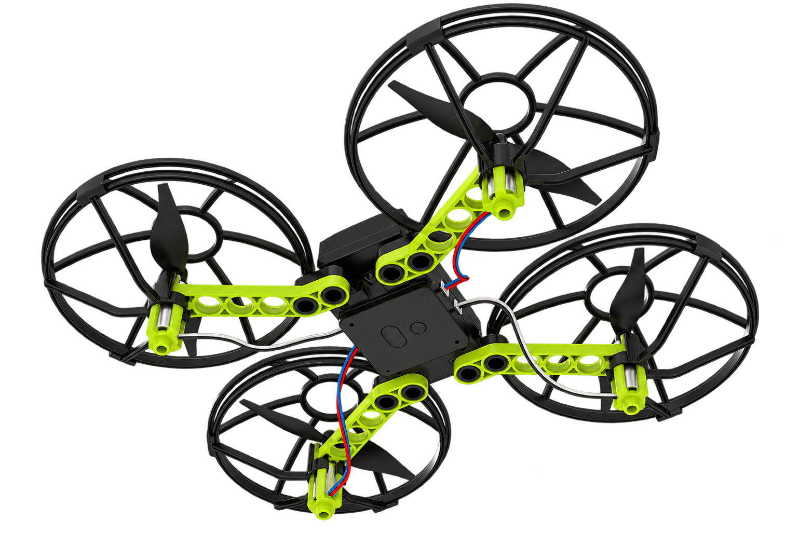

我的任務
今天要破解：
如果把一架四軸無人機拆開，裡面有哪些不同部分？它們各自負責什麼，又如何合作？
如果把一架四軸無人機拆開，裡面有哪些不同部分？它們各自負責什麼，又如何合作？
01
猜想如果把這架無人機拆開，裡面可能藏了什麼？
01
猜想
猜想
如果把這架無人機拆開，裡面可能藏了什麼？

先不要查答案。看著這架無人機，從下面選項勾選你認為拆開後「可能會有」的部分；可以多選，也允許先猜錯。
這一題不是考記憶；先留下原始猜想，後面再用功能與分類慢慢修正。
02
配對零件與功能：它主要負責什麼？
02
配對
配對
零件與功能：它主要負責什麼？
觀察實體零件或教師展示，再為每個項目選一個「最主要的功能」。
機架／機臂／護罩
→
電池
→
馬達＋螺旋槳
→
ToF／光流感測
→
主控盒／控制板
→
遙控器／2.4G 通訊
→
程式
→
已完成 0／7 組配對。
同一個元件可能參與多個功能；這裡先抓「最主要角色」，方便下一步分類。
03
分類把零件放進它主要所屬的子系統
03
分類
分類
把零件放進它主要所屬的子系統
桌機可直接拖曳；手機／平板可先點一張卡，再點分類區。
待分類卡片
拖曳，或點一下選取。
已分類 0／9 張。
結構
支撐、固定、保護
能源
提供系統需要的電力
動力
把能量轉成動作／推力
感測
取得環境或自身狀態資料
控制
判斷、協調與決定輸出
通訊
接收／傳送外部命令
程式
把任務規則組織成可執行流程
操作提示：觸控裝置可先點卡片，再點分類區。
這七類是分析工具，不代表所有科技產品都一定有完全相同的七個子系統。
04
統整從一堆零件，看見一個科技系統
04
統整
統整
從一堆零件，看見一個科技系統
輸入 Input
任務命令、遙控通訊資料、電能、感測資料。→
處理 Process
控制板執行程式、解讀命令與感測資料，決定馬達輸出。→
輸出 Output
馬達與螺旋槳產生推力，使機體上升、下降、移動或旋轉。回授／回饋 Feedback
ToF、光流等感測器再次取得實際狀態，把資料送回控制端，讓系統知道「現在實際發生了什麼」。實際狀態 → 感測 → 回到處理／控制 → 再調整輸出
兩種看法要分清楚：「結構、能源、動力、感測、控制、通訊、程式」是在看系統有哪些功能；「輸入、處理、輸出、回授」是在看這些功能如何連成運作流程。
05
下一題如果只改變無人機的「身體」呢？
05
下一題
下一題
如果只改變無人機的「身體」呢？
M0 已經把無人機看成一個科技系統；接下來先從「結構」子系統出發。
M1｜機體結構：怎樣的「身體」比較穩？
我的任務紀錄
M0 只保留原始猜想、功能配對與子系統分類的關鍵紀錄。